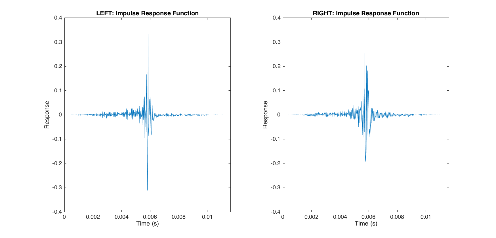
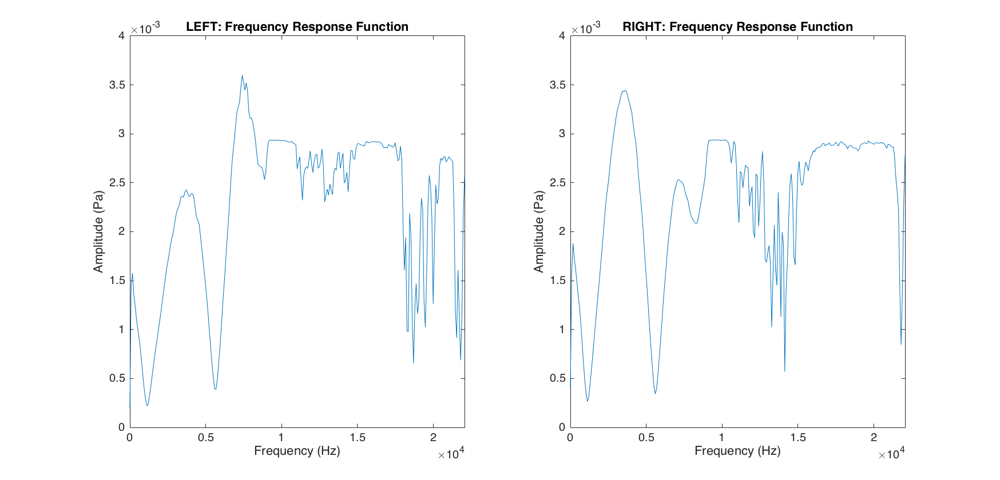
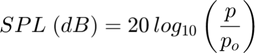
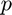
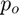
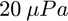
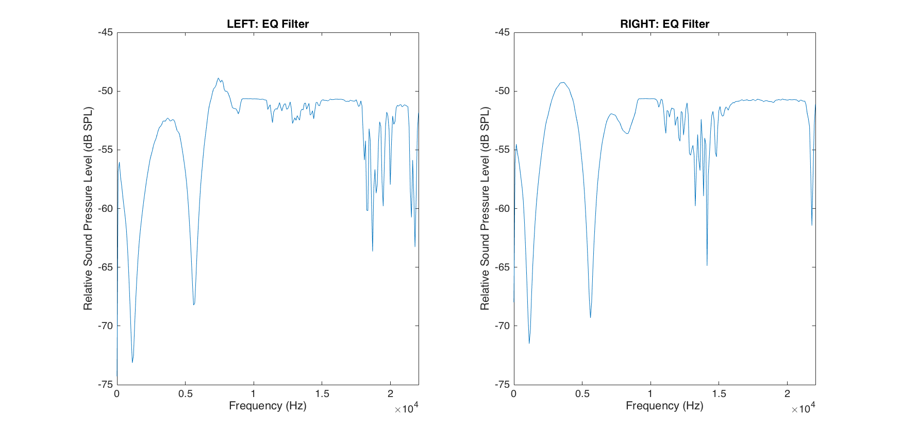

Contents
% demoAudioCalibrationProcess.m clear all; close all;
Audio System Calibration
The objective, as with any type of calibration, is to reproduce the input signal with (ideally) no distortions that may occur due to the method of delivery.
In the auditory system, these distortions can come from a variety of sources. The distortions that this demonstration walks through are from headphones of an audio system setup.
Please keep in mind that distortions will vary from headphones made from different manufactures due to the materials used during manufacturing as well as the possible addition components in the headphones. Distortions will even vary from left to right headphones to varying degrees. All important to keep in mind.
Impulse Response Function (IRF)
An impulse response function is the response of a dynamic system in time to a brief input, called an impulse. In the case of audio system calibrations, the impulse is usually 1 volt delivered into the headphones at 1 kHZ.
This is either done with oscilloscope (if you have one) or the impulse response function (and possibly other information) will be provided by the manufactures of the headphones.
I've provided an example file that contains all of the information that will be walked through in this demo, but let us assume that all we know right now is the impulse response function for each headphone, left and right, and the sampling rate that the impulse response function was collected at.
load('Example_Audio_Calibration.mat'); % audioInfo fsLeft = audioInfo.left.fs; irfLeft = audioInfo.left.irf; fsRight = audioInfo.right.fs; irfRight = audioInfo.right.irf;
We can vizualize the impulse response functions for each headphone as a function of time.
tLeft = ((0:(length(irfLeft)-1)))/fsLeft; tRight = ((0:(length(irfRight)-1)))/fsRight; h = figure(1); clf; h.Position = [215 269 874 420]; subplot(1,2,1); plot(tLeft, irfLeft); xlabel('Time (s)'); ylabel('Response'); title('LEFT: Impulse Response Function'); set(gca, 'XLim', [0 max(tLeft)], 'YLim', [-0.4 0.4]); subplot(1,2,2); plot(tRight, irfRight); xlabel('Time (s)'); ylabel('Response'); title('RIGHT: Impulse Response Function'); set(gca, 'XLim', [0 max(tRight)], 'YLim', [-0.4 0.4]);
Frequency Response Function (FRF)
The frequency response function "...is the quantitative measure of the output spectrum of a system...in response to a stimulus, and is used to characterize the dynamics of the system." [1]
In other words, the frequency response function is a Fourier transform of the impulse response function. The impulse response function ("in response to a stimulus") in the frequency domain is the "spectrum" the definition from Wikipiedia was referring to.
Thinking back to what we know about the Fourier transform, we know that we can decompose any signal into its frequency components expressed in a complex conjugate (as given from MATLAB's fft()).
We might also be reminded fo the Nyquist Limit. This is upper limit of frequency component representation that can be acheived from a Fourier tranform. The Nyquist Limit is always half the sampling rate.
fLeft = linspace(0, audioInfo.left.fs/2, length(audioInfo.left.irf)/2+1); fRight = linspace(0, audioInfo.right.fs/2, length(audioInfo.right.irf)/2+1);
Back to the decomposition of the signal into complex conjugates. Complex conjugate values are just values that have a real and imaginary values. The real values contain the amplitude (or magnitude) information at each frequency component. The imaginary values contain the phase information at each frequency component.
For our purposes, we are only interested in the real values that come out of the Fourier transform. This can be done with the abs() on the output of fft() in MATLAB. The output is then scaled by 2 times the number of samples from the input signal. This accounts for the redundancy in the fft() transformation.
ampL = 2 * abs(fft(audioInfo.left.irf)) / length(audioInfo.left.irf); ampL = ampL(1:length(fLeft)); ampR = 2 * abs(fft(audioInfo.right.irf)) / length(audioInfo.right.irf); ampR = ampR(1:length(fRight));
After the Fourier transform, we are now in the frequency domain. We can visualized the amplitudes in Pascals of each frequency component in the impulse response function as a function of frequency in Hz.
h = figure(2); clf; h.Position = [215 269 874 420]; subplot(1,2,1); plot(fLeft, ampL); xlabel('Frequency (Hz)'); ylabel('Amplitude (Pa)'); title('LEFT: Frequency Response Function'); set(gca, 'XLim', [0 max(fLeft)], 'YLim', [0 0.004]); subplot(1,2,2); plot(fRight, ampR); xlabel('Frequency (Hz)'); ylabel('Amplitude (Pa)'); title('RIGHT: Frequency Response Function'); set(gca, 'XLim', [0 max(fRight)], 'YLim', [0 0.004]);
Equalization (EQ) Filter
Equalization filters are filters that "boost" or "weaken" the signal at specific frequency ranges to produce a "equalized" output. EQ filters basically plot relative "boosts" or "weakening" of sound pressure level as a function of frequency.
Since we already have the frequency response function, which is a meausre of amplitude as a function of frequency, it is easy enough to convert the amplitudes in Pascals (Pa) from the frequency into relative sound pressure levels in decibels (dB SPL). The formula for this conversion is:

Where  is the amplitude you want to convert and  is the reference sound pressure. Air, , is commonly used as the reference sound pressure.
To convert our frequency response functions for the left and right headphones all we need to do is transform each amplitude into sound pressure level with the formula above.
splL = 20*log10(ampL); splR = 20*log10(ampR);
Note that I'm not including the reference sound pressure level. This is because the desired output is the relative sound pressure levels as a function of freqencies. Including the reference sound pressure value would only scale the output and does not impact the relationship between sound pressure levels and frequencies.
Lastly, we plot the relative sound pressure levels as a function of frequencies for each headphone.
h = figure(3); clf; h.Position = [215 269 874 420]; subplot(1,2,1); plot(fLeft, splL); xlabel('Frequency (Hz)'); ylabel('Relative Sound Pressure Level (dB SPL)'); title('LEFT: EQ Filter'); set(gca, 'XLim', [0 max(fLeft)]); subplot(1,2,2); plot(fRight, splR); xlabel('Frequency (Hz)'); ylabel('Relative Sound Pressure Level (dB SPL)'); title('RIGHT: EQ Filter'); set(gca, 'XLim', [0 max(fRight)]);
While we only have a finite sample of the relative sound pressure levels as given by the half the frequency sampling rate of the original impulse response function (thank you, Fourier transforms!), it is easy enough to interpolate sound pressure levels for other frequencies using spline().